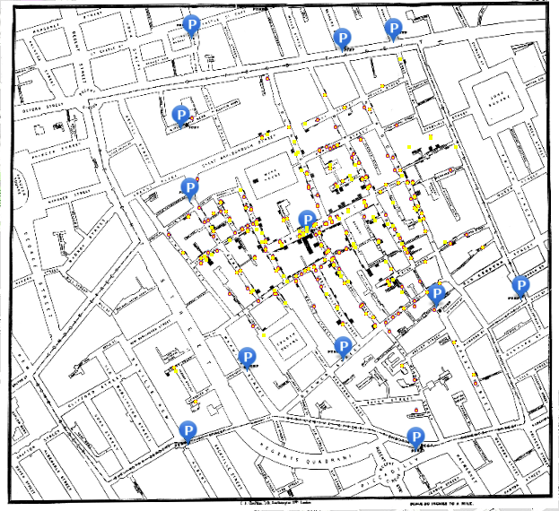
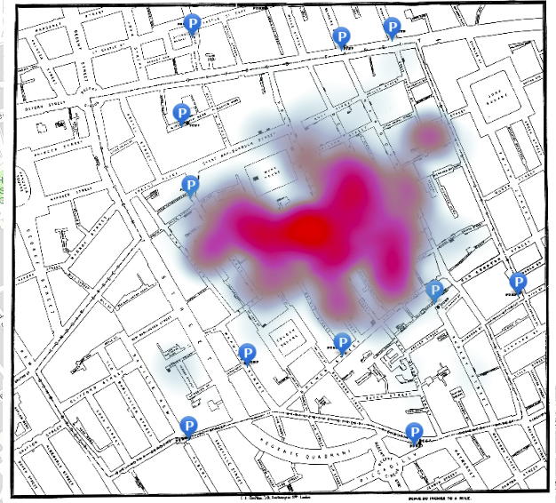
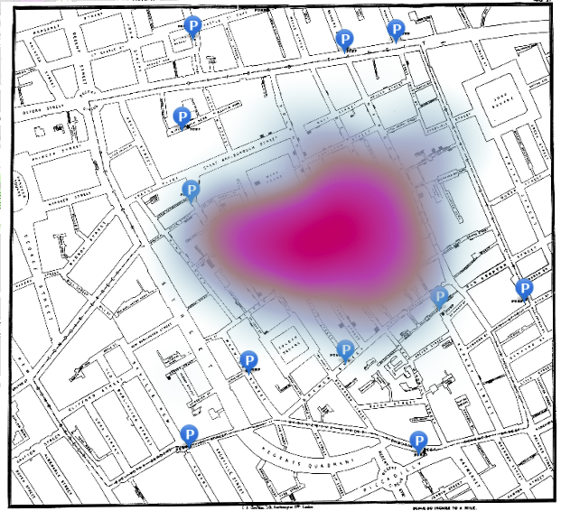
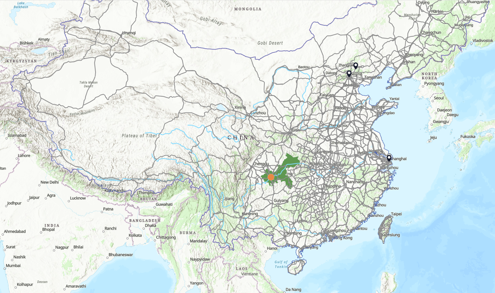
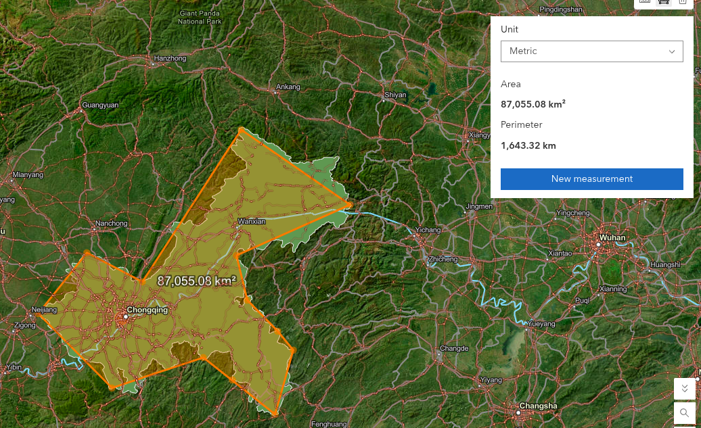

Lab 1 · September 2026
How the area of influence changes the Soho cholera map
The question
In Soho, London how consistently does the heat map point toward the pump nearest 43 Broadwick Street when the area-of-influence setting changes?
The data
The map contains four layers: Snow_Map, Public water pumps, Cholera cases by address, and Soho. The cholera layer contains 322 addresses and uses Num_Cases to represent the number of deaths recorded at each address. The pump layer contains twelve public water pumps. The map is a public Esri web map.
A provenance issue is that the historical geometry is paired with a modern street-name attribute: the pop-up identifies the relevant pump as 43 Broadwick Street, although the street was called Broad Street in 1854.
The method
I used ArcGIS Online Map Viewer and selected the Cholera cases by address layer. I created a weighted heat map using Num_Cases, rather than counting each address as one equal point. The underlying procedure is weighted kernel density estimation. I tested the Area of influence slider at three positions: far left, middle and far right, keeping the same Soho extent for each screenshot.
The screenshots record the slider positions because Map Viewer does not show the bandwidth as a numerical distance.
The map
Live ArcGIS map: Soho cholera
Interactive ArcGIS web map for the Soho cholera analysis.



Sensitivity table
| Area of influence | Pumps in the hottest band | 43 Broadwick nearest the centre? | What this map alone suggests |
|---|---|---|---|
| Far left | 1 | Yes | The heatmap is highly localized, with small hotspots around individual or nearby cases. The broader concentration pattern is harder to interpret. |
| Middle | 1 | Yes | The result is more fragmented and sensitive to local clusters. |
| Far right | 1 | Yes | The result is smoother and less detailed, so local structure is hidden. |
China map and Chongqing measurement
The second part of Lab 1 uses a China map with country boundaries, administrative units, rivers, roads and city points. For Chongqing, my measured area was 87,055.08 km², compared with the official figure supplied by the lab of 82,400 km². The difference is 4,655.08 km² of the official area. The population value I recorded for Chongqing was 32,054,159.


Using the measured area, the approximate municipal average density is 368 people per km² (32,054,159 ÷ 87,055.08). This figure describes the municipality as a whole, not only the built-up urban area.
Live ArcGIS map: China in layers
Interactive ArcGIS web map for the China in layers exercise.
What I found
Changing the area of influence changes how the same cholera-address data looks and is understood. The middle setting makes a more uneven surface with several peaks. The far-right setting makes a wider, smoother cluster. This means a heat map is not a direct measurement at each colored spot. It is a modeled surface. Its shape depends on the bandwidth the map-maker chooses.
What this does not show
The map does not prove that the heat map found the pump by itself. Snow had already looked at addresses and built his argument before the famous map was published. The surface also does not show cause, water flow, individual travel routes, or whether every old address was placed on the map correctly. Using a modern street name for a historical place is another limit.
Reflection and AI-usage
The reflection and AI-usage disclosure have been kept private and submitted through Brightspace rather than published on this page.
← Back to all labs